Bocetos
A continuación vamos a explicar las diferentes páginas del proyecto y las funcionalidades a las que pertenecen
Índice:
El índice es la página principal de nuestra página web, cuenta con una cabcera en la que tendremos el nombre de nuestra empresa,
unas noticias sobre las últimas adiciones de ropa a la página y un desplegable arriba a la izquierda por el que podremos acceder
a las distintas funcionalidades de la página web, por útlimo arriba a la derecha tendremos el menu de usuario a través del cual
los ususarios se drán de alta en la página y podrán visualizar su perfil. En el pie de la página se encontrará nuestra información
de contacto.
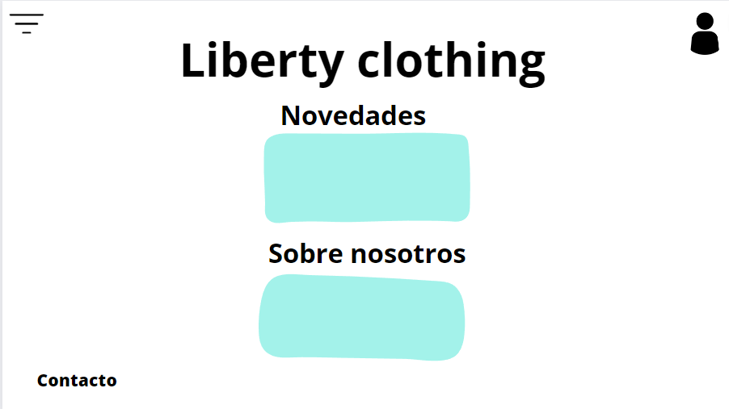
Gestión de compras:
La funcionalidad gestión de compras cuenta con cuatro páginas diferentes para la validación de la compra:
-
Resumen de compra:
En esta página al usuario se le muestran los elementos que haya decidido comprar, junto con el precio total que suman.
El usuario puede añadir o eliminar elementos al carrito antes de darle a la siguiente fase.
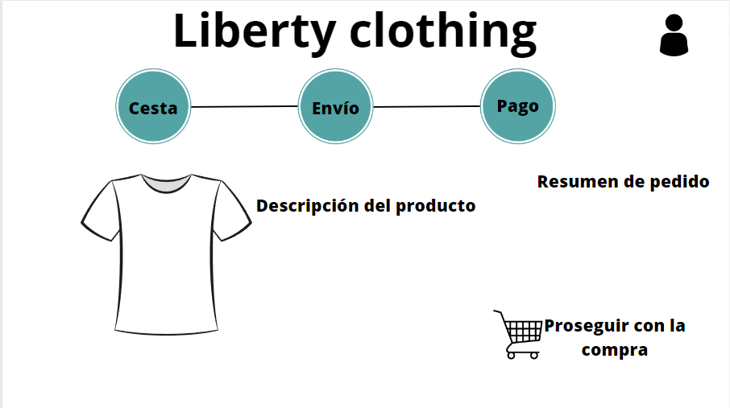
-
Lugar de envio:
Después de la página de resumen de compra el usuario debe especificar la dirección donde quiere recibr su pedido,
el usuario debe introducir una dirección a mano.
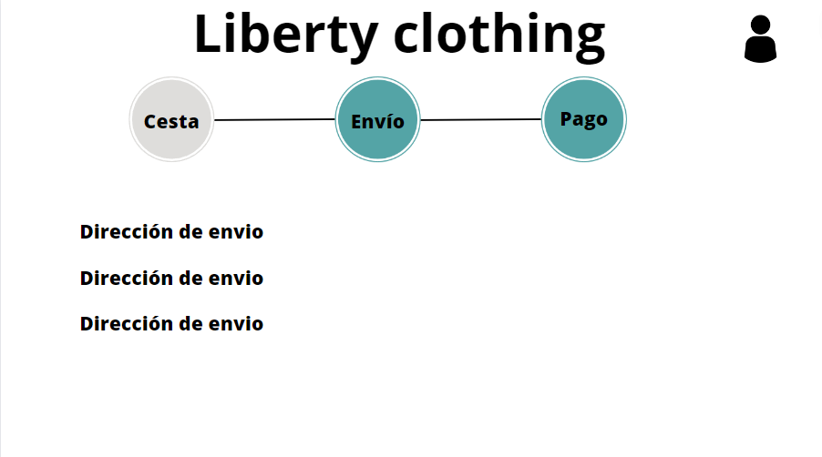
-
Método de pago:
Después de especficar el lugar de envío el usuario deberá escoger como quiere realizar el pago de los productos,
este tendrá dos opciones, el pago en metálico del producto cuando sea entregado o pagar con tarjeta en el navegador,
para lo cual deberá introducir los datos de su tarjeta.
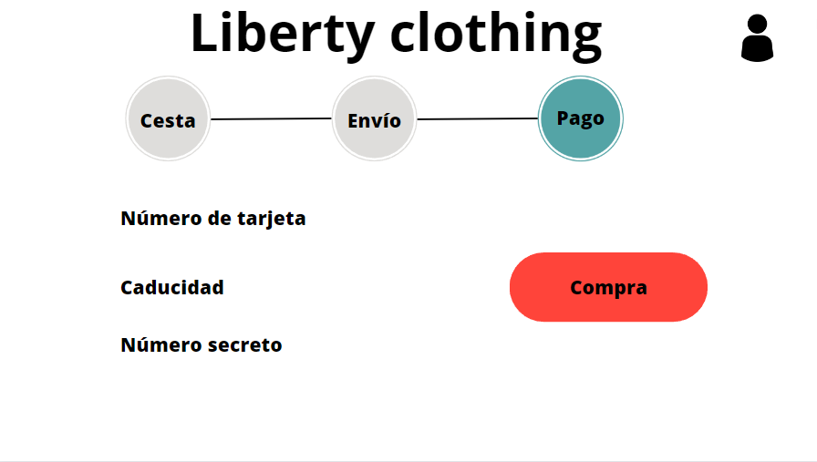
-
Finalización pago:
Después de rellenar todos los requisitos anteriores habremos terminado la compra y la web nos informará de ello con
información en pantalla y ofrecerá dos opciones, continuar con las compras y volver al indice o salir que les llevará a
la pantalla de logout.
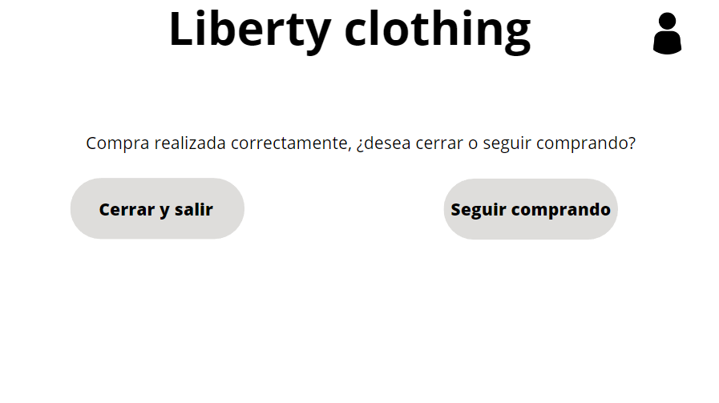
Herramientas del administrador
Las herramientas del administrador permiten modificar la base de datos para mantener el catálogo de ropa y las sucursales actualizadas.
Solo el administrador tiene acceso a esta página.
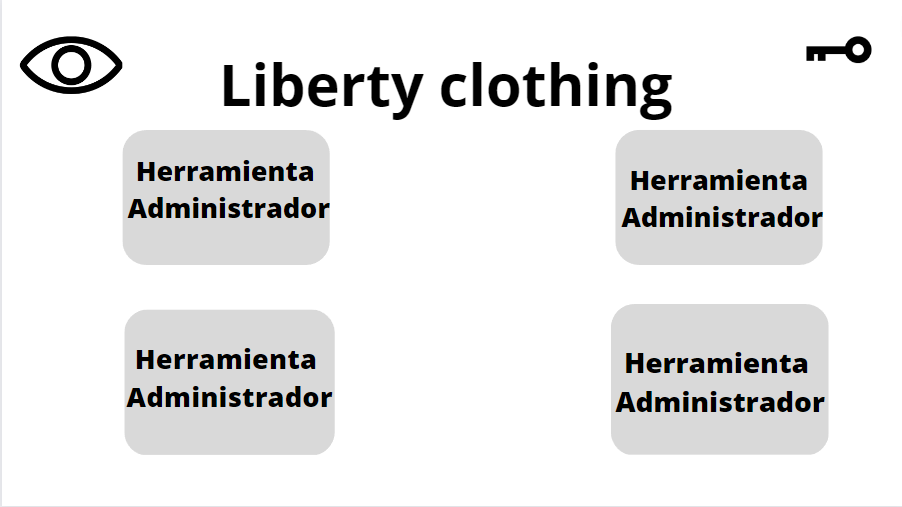
Añadir ropa:
Esta página presenta al administrador un formulario para añadir una nueva prenda de ropa al catálogo, después de rellenar los datos
se actualiza la base de datos y se le presenta un mensaje de confirmación al administrador antes de devolverle de forma automática a
la página de herramientas.
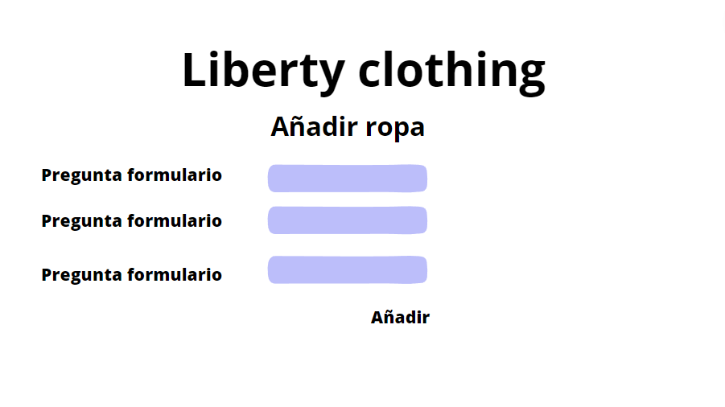
Eliminar ropa:
Así como a la hora de añadir una prenda de ropa, esta página presenta al administrador un formulario a través del cual seleccionará una
prenda de ropa para que sea eliminada de la base de datos, una vez terminado el proceso se le muestra al administrador un mensaje de confirmación
y se le devuelve a la página de herramientas.
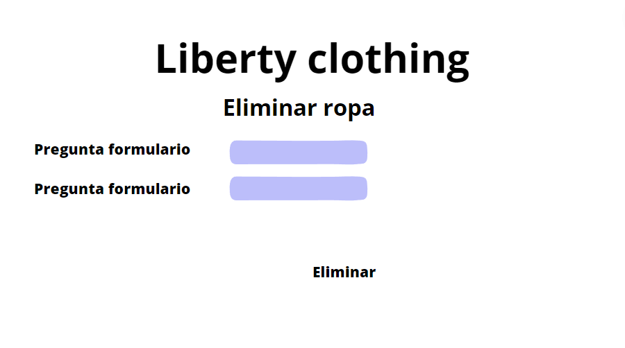
Añadir tienda:
Para mantener el localizador actualizado con las últimas tiendas que abramos, el administrador tendrá la opción de añadir dicha tienda a la base
de datos, junto con la información que queremos proveer a los usuarios de la web. Una vez finalizado el proceso se les presentará un mensaje de confirmación
y se les llevará al menu de herramientas.

Eliminar tienda:
El administrador puede eliminar tiendas mediante un formulario, una vez seleccionadas y confirmada la elección la base de datos se modificará
y aparecerá un mensaje de confirmación que los devolverá al menú de herramientas.
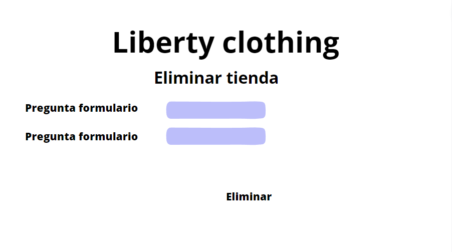
Vista de perfil
Todos los usuarios registrados tienen acceso a una vista de su perfil, en la que pueden ver sus datos y los puntos que llevan acumulados hasta el momento, adicionalmente
pueden personalizar su perfil.
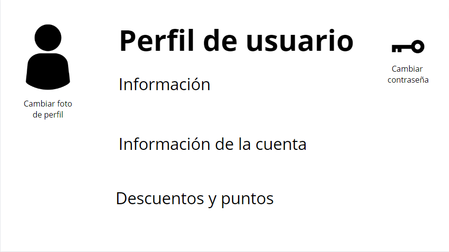
Catálogo de ropa
El catalogo de ropa es accesible para todos los usuarios de la web, muestra diferentes tipos de ropa además de tener la posibilidad de hacer búsquedas y aplicar filtros.

Vista de filtros:
En la imagen podemos ver que se ha abierto el menú de filtros y nos esta mostrando todos los filtros disponibles, los filtros ayudan a nuestros usuarios a buscar de forma
más eficiente en nuestro catálogo el tipo de ropa que deseen comprar.

Vista de productos:
Una vez el usuario seleccione el producto que desea comprar, una vista detallada del producto aparecerá ante el, en ella podrá observar la foto de stock del producto,
un selector de talla, el precio del producto junto con una breve descripción subre el producto y debajo los comentarios de los diferentes usuarios sobre el producto en concreto.
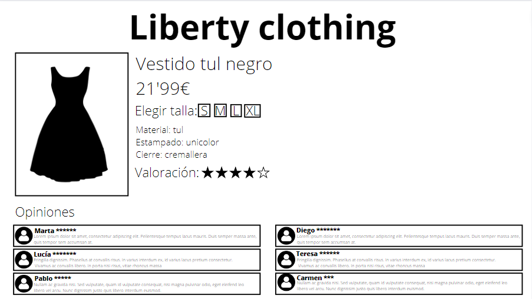
Buscador de tiendas
Esta funcionalidad es accesible para todos los usuarios, muestra la tienda más cercana basada en la información que provee el usuario (localidad, calle, código postal), aportando la dirección
de la tienda y su horario de apertura.
Vista general:
Vista del usuario antes de rellenar los campos del formulario.
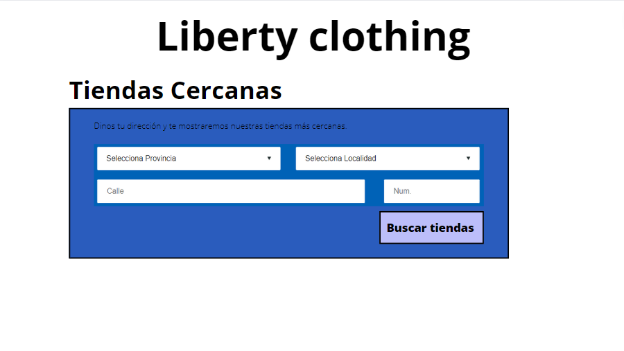
Formulario rellenado:
Vista del formulario rellenado por el usuario con la respuesta del servidor.
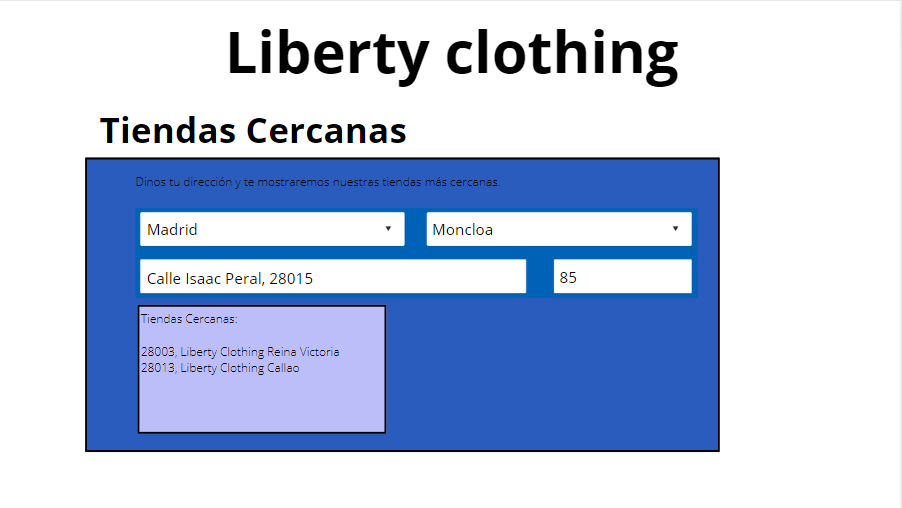